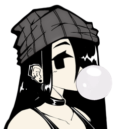

(last updated: 5/7/25)
hi hi~ i’m chiyo tanaka, your fav 16 y/o estro angel. maybe a lil corrupted, maybe just tired. i like talking to my boyfriend, coding things i know nobobdy will see, playing games at 3am, and daydreaming about fucking killing myself lmfao
i’m part of raptorbytes — a digital haven where i help make shit projects. you can reach me through email or discord, if i’m still around. my work is on github and u can watch shit i make on youtube if i mean enough to you.
♡ thanks for visiting my site. i hope u find comfort in this shit ♡